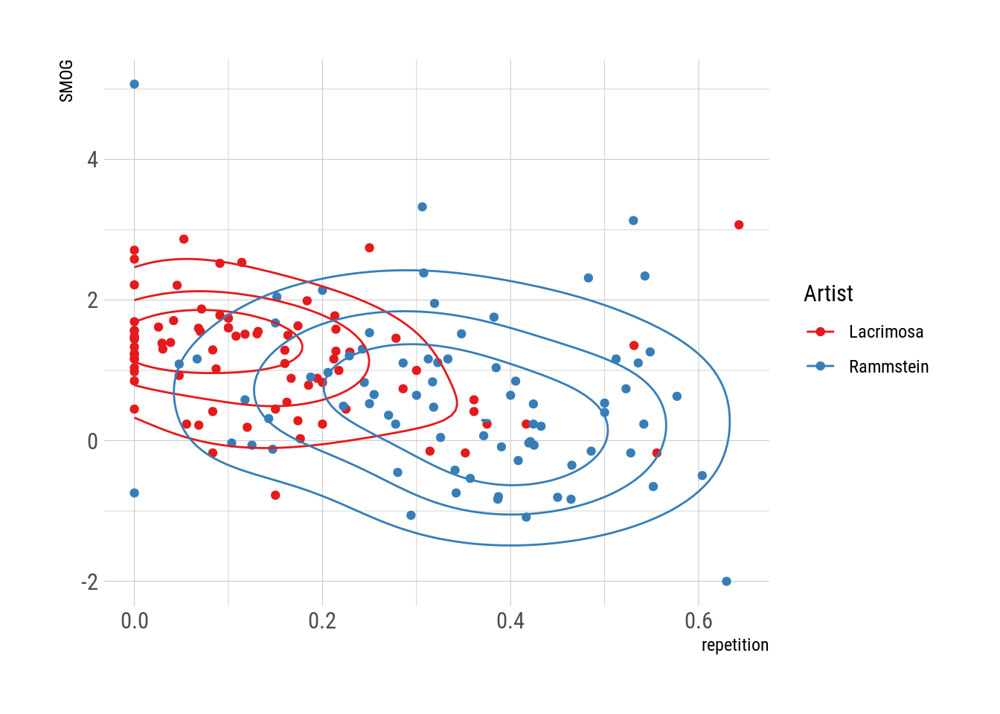

Rammstein vs. Lacrimosa
En español: Rammstein vs. LacrimosaSome time ago, someone I follow on twitter posted about having to buy a whole book with rules to tease out grammatical gender in German. Further down the replies, someone reminisced about trying (and failing) to learn German just by listening to Rammstein’s lyrics. I studied about drei Jahre of German at the same time I started listening to Rammstein and other German-speaking bands and I’ve always found Rammstein’s lyrics to be surprisingly simple. So simple, in fact, that I suspect that Till Lindemann intentionally dumbs down his writing to cater to the English speaking word and, in particular, to beginner-level German students
I decided I wanted to see if this vague idea had any merit. So I downloaded Rammstein’s lyrics and measured it’s complexity. As a benchmark, I compared them with Lacrimosa’s lyrics, another German-speaking band from my youth.
A taste of the data
For those not familiar with either band, this is the chorus from Rammstein’s Sonne:
Eins, hier kommt die Sonne.
Zwei, hier kommt die Sonne.
Drei, sie ist der hellste Stern von allen.
Vier, hier kommt die Sonne.
Now, the song does have some complex meaning and interesting uses of metaphor, but the sentence structure is painfully simple. Not only that, but since it repeats the numbers one through ten over and over again, I cannot shake the feeling that it’s a song designed to help children learn the numbers.
On the other hand, here’s a part of Lacrimosa’s Warum so Tief:
Warum so tief - und warum gerade jetzt?
Warum vor ihr - warum diese Ironie?
Warum so hart - und warum nicht einfach besiegt?
Muss ich denn wirklich für jede Begegnung
für immer und ewig mit all meiner Liebe bezahlen?
Einmal ohne das eine und endgültige Gefühl - verloren zu sein
Nur einmal bei ihr - keine Tobsucht in Ketten
Doch ich kann es nicht ’mal bestreiten - dass ich euch liebe
Mutter Angst und Vater Schmerz
I believe the contrast is obvious. In particular, the last two verses of the first stanza make up a surprisingly long sentence, specially for a song.
These two examples were, of course, cherry-picked to make a point. So let’s try to quantify and analyse all songs from each band.
Getting the data
I want lyrics for every studio album by each band. I could try to automate this by scrapping, say, the respective wikipedia article, but it was easier to do it by hand.
library(data.table)
library(magrittr)
library(ggplot2)
theme_set(hrbrthemes::theme_ipsum_rc())lacrimosa <- data.table(
album = c("Angst", "Einsemkeit", "Satura", "Inferno", "Stille", "Elodia", "Fassade", "Echos",
"Lichtgestalt", "Sehnsucht", "Revolution", "Hoffnung", "Testimonium"),
year = c(1991, 1992, 1993, 1995, 1997, 1999, 2001, 2003,
2005, 2009, 2012, 2015, 2017)
)
rammstein <- data.table(
album = c("Herzeleid", "Sehnsucht", "Mutter", "Reise Reise", "Rosenrot",
"Liebe ist fur alle da", "Rammstein"),
year = c(1995, 1997, 2001, 2004, 2005, 2009, 2019)
)
albums <- rbindlist(list(Lacrimosa = lacrimosa,
Rammstein = rammstein),
idcol = "artist")Now, there’s a neat genius package that can download lyrics from, you guessed it, the popular website Genius1. You can “enrich” a dataframe with all the lyrics for each album of each artist like so:
albums <- albums %>%
genius::add_genius(artist, album) %>%
as.data.table() %>%
.[artist == "Lacrimosa" & album == "Sehnsucht", album := "Sehnsucht (L)"]
# (Both bands have an album named Sehnsucht)Now each row of albums holds each verse of each song of each album of each artist.
DT::datatable(albums) %>%
widgetframe::frameWidget()Readability of Rammstein’s lyrics
With these data I can begin to test my hypothesis. But how? I’ll score the readability of each song lyric. My hunch is that Rammstein’s lyrics will have a low score on readability (i.e. they are simpler) than Lacrimosa’s. The issue here is that, from what I can tell, most measures of readability are based on the English language. This is a huge problem for text analysis in any language other than English. In this case, a bit of quick googling lead me to the SMOG readability score, which has a variant adapted to German implemented in the quantea package.
Related to this, that not all songs by these bands are in German. Most albums by Lacrimosa, for example, have at least one song in English (often voiced by Anne Nurmi instead of Tilo Wolff). So I‚Äôll need to detect them and remove them from my analysis. Again, a bit of googling lead me to the textcat package, which I will consider a black box algorithm because at this point I‚Äôm done going through rabbit holes. üê∞
# Join all verses from each song
full_lyrics <- albums %>%
na.omit() %>%
.[, .(lyric = paste0(lyric, collapse = ".\n") ),
by = .(artist, album, year, track_title)]
# Get the language
full_lyrics[, language := textcat::textcat(lyric),
by = .(track_title, artist, album)]
# How many songs for each language?
full_lyrics %>%
.[, .N, by = .(artist, language)] %>%
.[order(-N)] %>%
knitr::kable()| artist | language | N |
|---|---|---|
| Lacrimosa | german | 81 |
| Rammstein | german | 75 |
| Lacrimosa | english | 16 |
| Rammstein | scots | 3 |
| Lacrimosa | scots | 2 |
| Lacrimosa | catalan | 1 |
| Lacrimosa | romanian | 1 |
| Lacrimosa | finnish | 1 |
| Rammstein | english | 1 |
| Rammstein | portuguese | 1 |
As expected, most songs by either band are in German and a non negligible part of Lacrimosa’s are in English. The algorithm seems to be fooled by some lyrics, though. I inspected the individual cases. All songs marked as “scots” are actually in English. The songs allegedly in Catalan or Romanian are actually a instrumental songs which {genius} seems to have messed up. The one in “Portuguese” is actually Rammstein’s “Te quiero, Puta” which is actually in Spanish. Finally, Lacrimosa’s Vankina is really in Finnish.
Note that since song lyrics are in verse and don’t have punctuation I had to make the bold choice of assuming that each verse is it’s own sentence.
Another important limitation is that since these readability scores are based on prose, their validity is not garanteed in the case of poetry.
In any case, computing the readability score for only the German lyrics we get this
full_lyrics[language == "german",
"SMOG" := quanteda::textstat_readability(lyric, measure = "SMOG.de")$SMOG.de]
full_lyrics %>%
.[language %in% "german"] %>%
ggplot(aes(SMOG)) +
geom_density(aes(color = artist)) +
geom_rug(aes(color = artist)) +
scale_color_brewer("Artist", palette = "Set1")
So…hypothesis confirmed? Rammstein’s lyrics are definitely on the simple side. That said, they do own the 3 most complex songs in the dataset. However, this might be a bit misleading. Let’s look at the most complex song.
full_lyrics[which.max(SMOG)] %>%
with(cat(lyric))## Bewahret einander vor Herzeleid.
## Denn kurz ist die Zeit die ihr beisammen seid.
## Denn wenn euch auch viele Jahre vereinen.
## Einst werden sie wie Minuten euch scheinen.
## Herzeleid.
## Bewahret einander vor der ZweisamkeitHerzeleid is a short song (lyric-wise) and not terribly complicated. But it does feature some longer words. Ironically, these lyrics are actually based on a tradicional poem that can be found adorning several homes

Herzeleid poem
SImilarly, the second most complex song -Zeig dich- features almost exclusively two-word verses. So really I’m not terribly confident about this result. On the other end of the spectrum, though, it really makes sense.
full_lyrics[which.min(SMOG)] %>%
with(cat(lyric))## Du, du hast, du hast mich.
## Du, du hast, du hast mich.
## Du, du hast, du hast mich.
## Du, du hast, du hast mich.
## Du, du hast, du hast mich, du hast mich.
## Du hast mich gefragt, du hast mich gefragt.
## Du hast mich gefragt und ich hab' nichts gesagt.
## Willst du bis der Tod euch scheidet.
## Treu ihr sein für alle Tage?(Ja) Nein.
## (Ja) Nein.
## Willst du bis zum Tod, der scheide.
## Sie lieben auch in schlechten Tagen?(Ja) Nein.
## (Ja) Nein.
## Du, du hast, du hast mich.
## Du, du hast, du hast mich.
## Du, du hast, du hast mich, du hast mich.
## Du hast mich gefragt, du hast mich gefragt.
## Du hast mich gefragt und ich hab' nichts gesagt.
## Willst du bis der Tod euch scheidet.
## Treu ihr sein für alle Tage?(Ja) Nein.
## (Ja) Nein.
## Willst du bis zum Tod, der scheide.
## Sie lieben auch in schlechten Tagen?(Ja) Nein.
## (Ja) Nein.
## Willst du bis der Tod euch scheidet.
## Treu ihr sein(Ja) Nein.
## (Ja) NeinThe simplest song of all is, no surprise, Du hast. It’s a rather ‘dumb’ song, at least in terms of readability. It’s got very short verses, very short words and very simple structure. What the SMOG score doesn’t capture, though, is that it’s also very repetitive. There are essentially only 3 distinct stanzas!
This observation again resonates with my experience with both bands. Rammstein adheres fully to the traditional song structure of verses, choruses and bridges while Lacrimosa is no stranger to more “prose-like” lyrics with little in the way of repetition. For example, Der Strasse der Zeit has no chorus at all and, thus, counting the proportion of unique verses in that song we see that only about 7% of the lines are duplicated.
albums[track_title == "Die Strasse der Zeit"] %>%
.[, mean(duplicated(lyric))]## [1] 0.07017544Extending this counting method to both band’s respective discographies:
albums %>%
.[, .(repetition = mean(duplicated(lyric)), .N), by = .(track_title, artist)] %>%
ggplot(aes(repetition)) +
geom_density(aes(color = artist)) +
geom_rug(aes(color = artist)) +
scale_color_brewer("Artist", palette = "Set1")Woah! The difference here is outstanding! Unlike Rammstein, who happily write lyrics with 30% of repetition or higher, few of Lacrimosas’s songs repeat more than 20% of its verses. Indeed, a sizeable chunk of their songs feature no repetition at all!
Putting both measures together, we get a clear separation between both bands.
full_lyrics %>%
.[language == "german"] %>%
.[, repetition := mean(duplicated(strsplit(lyric, ".\n")[[1]])),
by = .(track_title, artist)] %>%
ggplot(aes(repetition, SMOG)) +
geom_point(aes(color = artist)) +
geom_density_2d(aes(color = artist), adjust = 1.5, bins = 4) +
scale_color_brewer("Artist", palette = "Set1")
Rammstein’s songs are generally simpler and feature a boatload more repetition.
Not only Rammstein repeats verses willy-nilly, but those verses are often not even full-fledged sentences. This can be inferred by using log odds ratios between both artists to distinguish very “rammstein-like” vs “lacrimosa-like” pairs of words:
full_lyrics %>%
.[language == "german"] %>%
.[, tidytext::unnest_tokens(.SD, word, lyric, token = "ngrams", n = 2),
by = .(track_title, artist)] %>%
.[, .N, by = .(word, artist)] %>%
.[!is.na(word)] %>%
tidylo::bind_log_odds(artist, word, N) %>%
.[order(-log_odds)] %>%
.[, .SD[1:10], by = artist] %>%
.[, word := tidytext::reorder_within(word, log_odds, artist)] %>%
ggplot(aes(word, log_odds)) +
geom_col() +
tidytext::scale_x_reordered() +
coord_flip() +
facet_wrap(~artist, scales = "free") 
The pair of words that distinguish Lacrimsoa’s lyrics are common parts of syntactically correct sentences, such as “so wie” (“such as”) or “das ist” (“this is”). Rammstein lyrics, on the other hand, are distinguished by repeated pairs of words with no syntactic structure, such as “bang bang”, “link zwo” (“left two”; the complete verse is “left two three four”), and “zwiter zwiter”.
Simplicity ≠ lack of quality
I had some fun learning some crude and basic tools of text data manipulation, but there’s nothing earth-shattering about the conclusion that Rammstein’s lyrics are generally simpler and more “song-like” than Lacrimosa’s. You don’t need webscrapping or R, you just need the ability to listen to music.
What’s more important, no law states that longer, more complex lyrics equal better songs. Du Hast might be exceedingly simple by any measure, but it does feature some interesting word play and reversal of expectations.